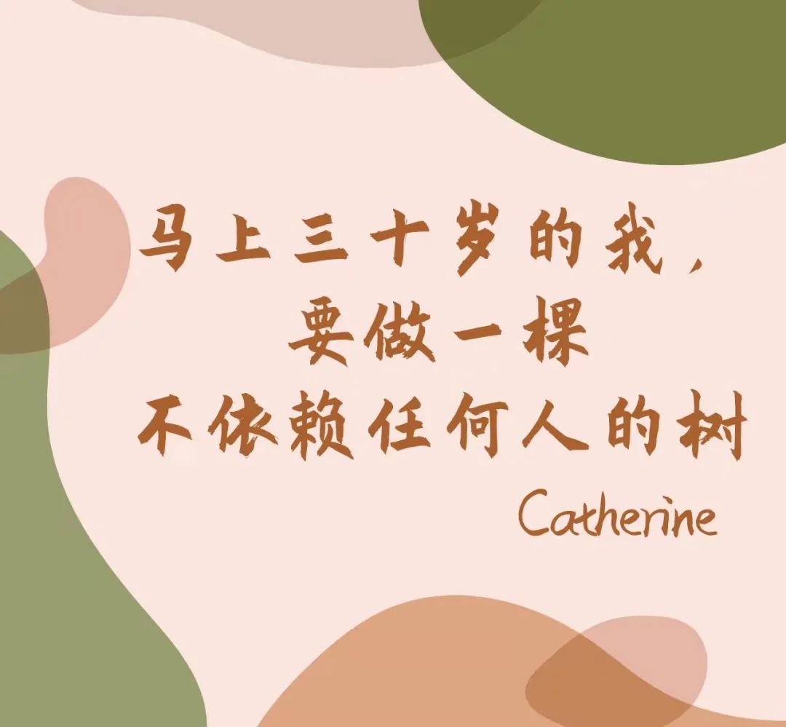
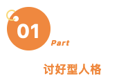
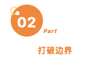

Catherine
Catherine一直生活在澳洲，从按部就班地上学读书，再到自由创业、创办30+女性播客，遭受家暴伤害的她，通过不断地反思与尝试，探索属于自己的疗愈方式，如今独立且潇洒地在自己的领域内熠熠生辉。



“直到现在我都觉得这件事情很有意义，不仅帮助国内的同学提高了口语能力，而且让他们对于西方文化也有更加深入的了解；虽然我2016年就毕业了，但到现在应该也有人记得曾经加入过这个社团。”
在不断地肯定与鼓励下，Catherine想要挖掘和尝试更多的不同，于是“兼职”提上了日程：从唐人街小黑工，保健品公司销售员，再到奢侈品商店的柜姐，8小时澳币的底薪一路被提到了25澳币一小时。这背后的辛酸不言而喻，但她在不同的角色转换里慢慢感悟到“昨日之我”与“今日之我”的交错，好像有什么东西慢慢融化了。 与此同时，抢劫与打官司的经历也变成了Catherine读书生涯里浓墨重彩的一笔。“因为被抢劫的缘故，我还专门去警察局做过笔录；但印象最深的是跟房东打官司，他在我房租到期的时候，无缘无故克扣我1700多澳币，所以我花了一整个月的时间去维权。因为没有法律经验，不知道怎样去告他，怎样会胜诉，所以我就在不停的收集资料，很不巧那时候处于失恋的低谷期，而且还在考试阶段，不过后续收到了一个不错的结果。”
还是这一年里，在Catherine不断地说服和支持下，母亲终于下定决心离婚。“我很早的时候就让我妈离婚。如果不离，可能她还会出现生命危险。最严重的一次时，她被我爸家暴到进了医院。但是她不离，说是为了我，但我想，更多的是因为世俗的原因。”
社会影响，大众的看法……这些禁锢在锁住了一位女性整整二十年之后终于被打破。 难忘的经历种种，细数过往，好坏兼具。在新得到的赞许与认可，母亲又跳起了喜欢的芭蕾舞。而那些Catherine无奈之下被逼做出的选择、孤身一人维权的旅途，也在源源不断地形成新的正向反馈，让这个自卑胆怯的姑娘开始慢慢积攒起新的能量。“就真的变了，一个人变得很自信，起码就很自信，就不会再讨好别人了。经历的太多了，我就忘了那些不好的回忆，其实女性还是很强大的。”

“他最先开始注意到我，很明显，之后又请我吃饭等等，大概过了一个半月我们就过渡到了一段serious relationship（认真的关系）。”
男友有点呆呆的性格和温和的脾气让Catherine放下了来自原生家庭里的戒备心理。“我们从2019年5月份到11月份谈恋爱，日常生活中虽然有一些小摩擦，但我想这些都没问题。那年秋天，他回家乡去治病，我正好去看他，也顺便见了他的父母，家里人特别好，所以我们之间很多习俗也非常像，我觉得还真的挺合适的。”
从喜欢到相恋，Catherine和绝大多数女孩子一样，拥有着对未来生活的期待。他们决定开启一段同居生活。 2020年新冠疫情爆发，在2月末的寒假结束后，Catherine的公司要求在家远程办公，而男朋友则需要正常在岗，经过协商后他们回到了自己的小家。3月份的时候彼此的矛盾开始升级，基本上每一周都要吵架，有时候是生活习惯，有时候是观念的问题。“我逐渐发现他是一个他是自私的人，而且有很传统的大男子主义。比如在家大扫除的时候，他把厨房这种比较脏的地方分给我，自己去干一些简单轻松的活；然后会因为‘不会做饭’的借口让我每天做饭。”
日积月累，Catherine觉得男朋友的一些缺点正在慢慢显现，而有一些和她的价值观完全相悖。“我当时已经准备开始线上创业了，他非常坚定地反驳和贬低我所做出的成果，我们曾经吵架还因为他说女性必须要生孩子，我说我不生，他说那就分手。”
五月份的时候矛盾越来越严重，Catherine和以前的学妹去吃饭也受到了男朋友的阻拦，并且逐渐开始干涉她的正常社交活动：“异性好友的交流不允超过10分钟”“出门不可以超过一小时”。而这些都让Catherine警觉到事情开始正在发生异样，萌生了搬出去的想法。 真正给她敲响警钟的是一次家庭暴力。“我坚决受不了的是他把矛盾升级到肢体暴力。有一次我不小心把他鼻子弄出血，他就说我要报复你，用手指甲挠我的腿，是那种一道一道地非常红，我把这个定义为家庭暴力，属于一种故意伤害。我看到他不能控制自己的肢体，感觉自己受到了很严重的威胁。”
噩梦仿佛重现，男朋友发怒的场景让Catherine想起了自己的父亲发怒时狰狞的表情以及失控的情绪，仿佛在同一个怪圈里徘徊，父亲对母亲的家暴，男友对自己的家暴，反复斟酌，在2020年五月的一天，Catherine收拾好自己的行李毅然决然地离开。“上车的那一瞬间，
我觉得自己天好像亮了。”
“我感觉原生家庭的相处模式会决定亲密关系模式，比如说面对亲密关系我会有点焦虑性和回避性，在和男生相处的时候也带有一点讨好的性质。这可能和是否受到正面反馈有关，在事业上，从澳洲的兼职到现在的创业，我受到了很多肯定，但是在与异性的相处过程里反馈很少。”
在家暴的恶性闭环里寻找出路，一遍一遍审视与反思，Catherine逐渐摸索到了新的路径。如何从迷茫中出走，不仅属于个人问题，其实也是当下有类似经历的女性所面临的共同话题。
“我想女性一定不要太专注于恋爱，把大部分时间放在感情上会导致自我的失衡，我们需要探寻自身的意义，找到自己的独特优势，做让自己有成就感的事情从而形成正循环。当事情都在自己掌控之内，你会发现自己拥有无穷的力量。”
“FreeLab是2020年年中创立的，来源于我疫情居家办公的灵感。”
Catherine厌倦了陈旧的8小时工业时代工作制，想到新信息时代很多工作可以远程通过电脑完成，她建立了这样一个自由职业社群。“很重要的一点是我们可以自由的工作，交友，到现在有很多人加入我们，与此同时我们还在开通社交媒体以及做线下活动，帮助大家从打工人更好地过渡到自由职业者。”
“‘Around30’的创立是因为我当时很喜欢听播客，去年11月份的时候也和几位朋友聊到了三十岁女性的年龄焦虑，比如说催婚，职场歧视，社会上物化女性的一些看法等。我想这样的群体需要被看见，所以就创立了这档播客来关注30岁女性的生活。”
通过一个平台，一个渠道，Catherine正在用属于自己的方式让更多女性觉醒，传递更多的力量去帮助大家。还有三个月就是她的三十岁生日。“我现在有点期待，30岁很美好，我依然觉得可以活出无限的可能性。”
两个多小时的采访，屏幕对面俨然一位自信且明亮的女性，视频里树影婆娑，甚至可以听到鸟鸣，晦涩的过往对于她似乎是一场生命的锤炼，积蓄力量，在家暴的恶性闭环里努力寻找缺口，在播客里发声鼓励更多女性独立。这是一段很长的路，
但有幸终于遇见了太阳。